Initial exploration of the dataset to understand feature distributions, class imbalance, and correlations.
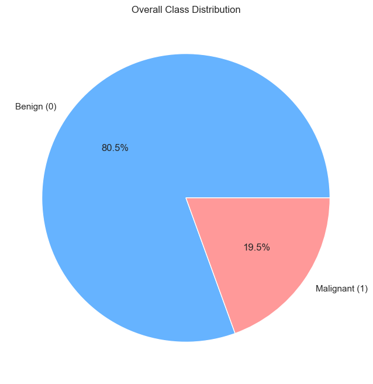
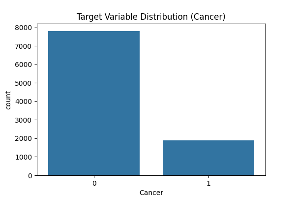
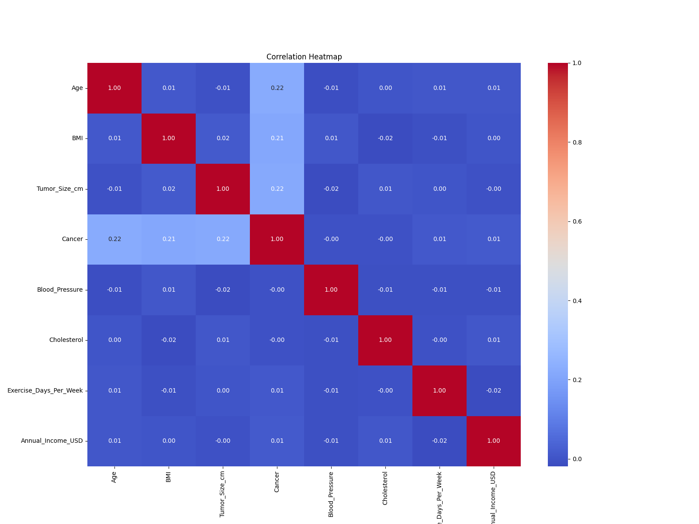
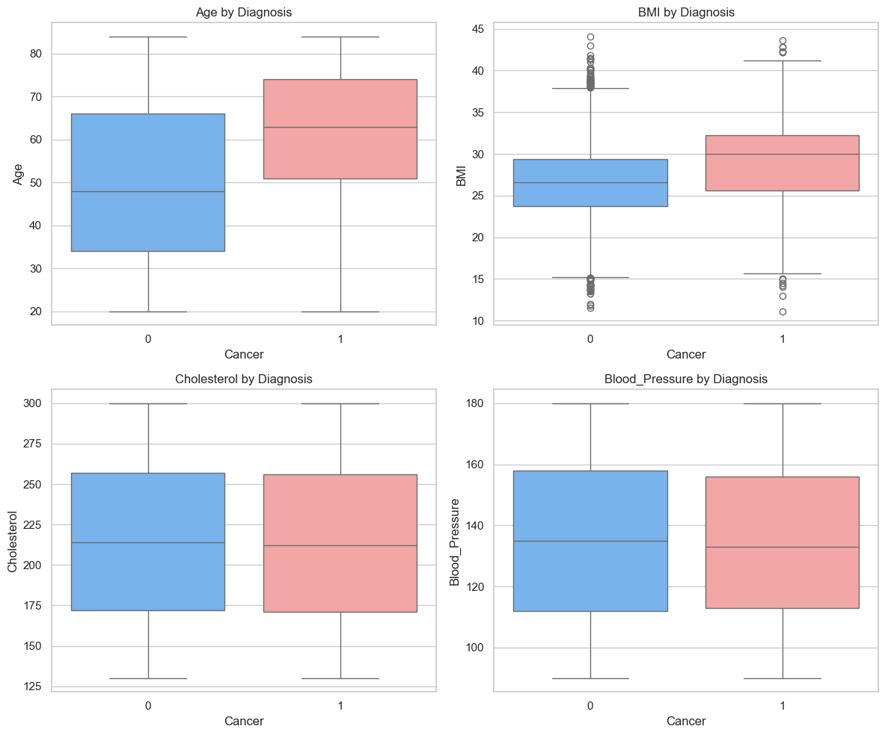
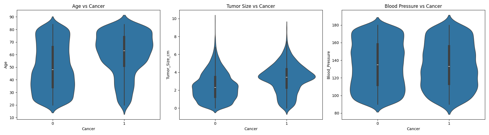
Addressing the class imbalance (approx. 80:20 Benign to Malignant) using Synthetic Minority Over-sampling Technique (SMOTE).
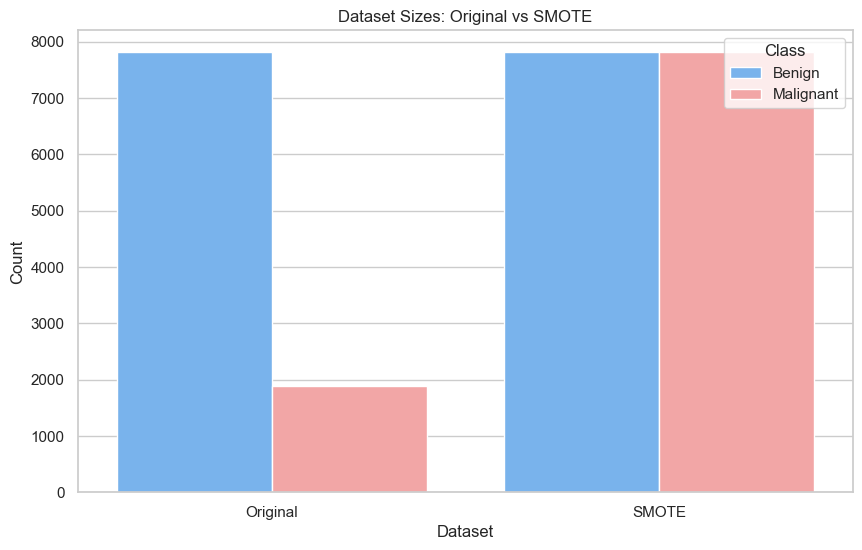
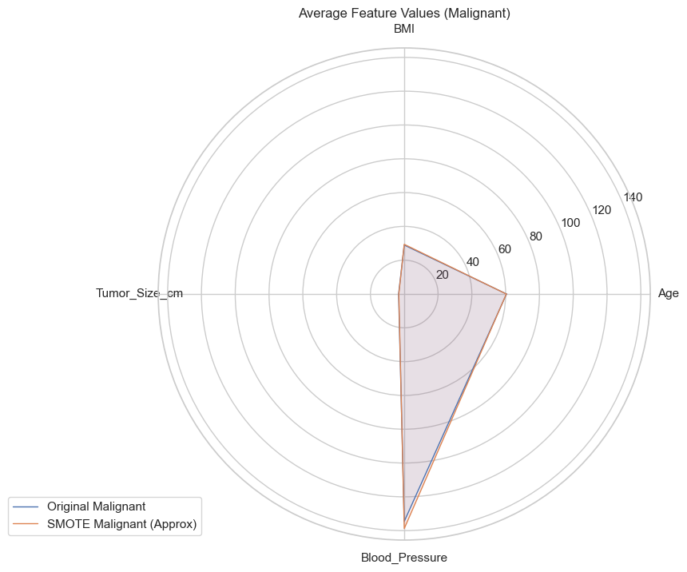
Comparing performance metrics across different classification models (Logistic Regression, Random Forest, Gradient Boosting).
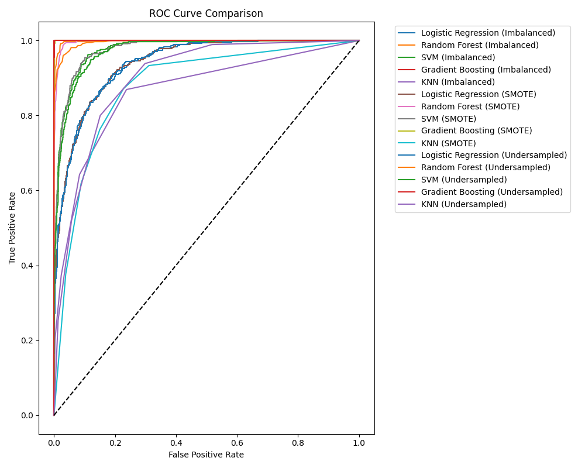
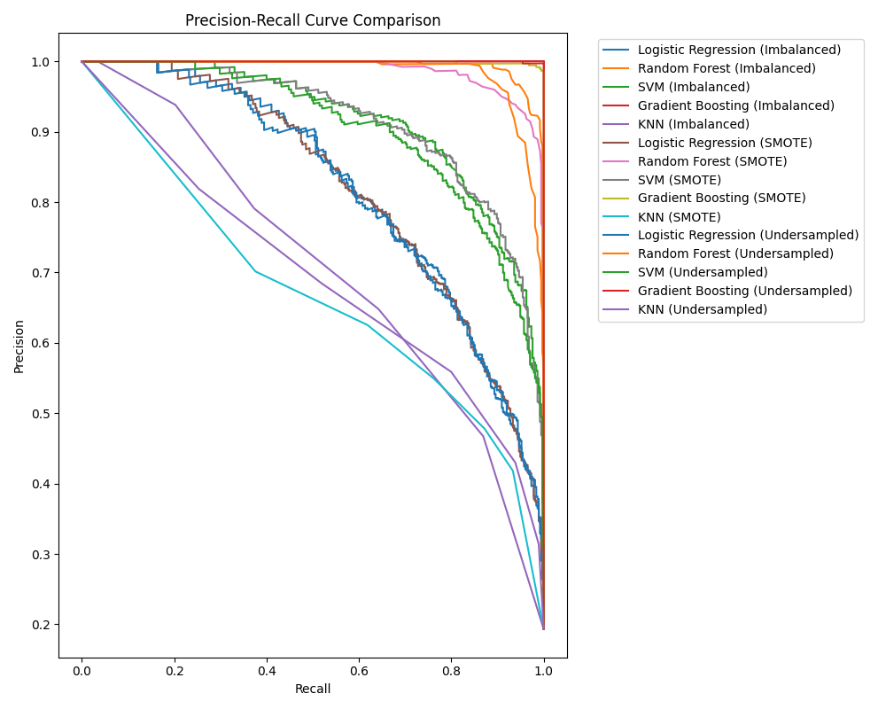
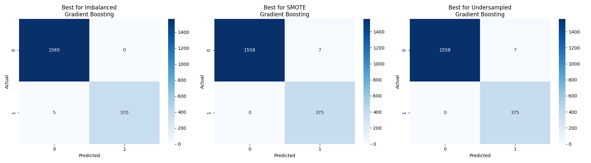
Adjusting the decision threshold to prioritize Recall and minimize False Negatives, reflecting the clinical priority of catching malignant cases.
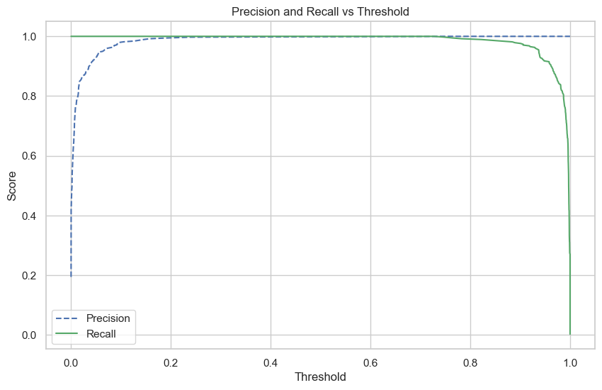
Interpreting model predictions using SHapley Additive exPlanations (SHAP) to provide clinical transparency.
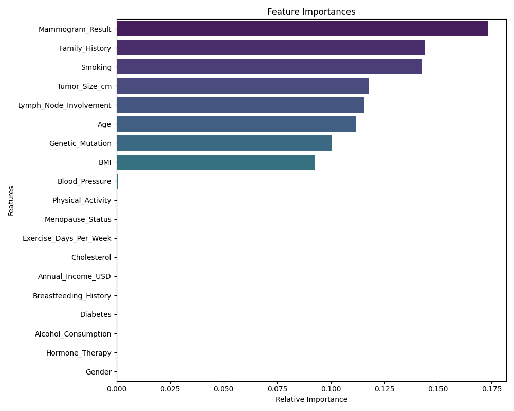
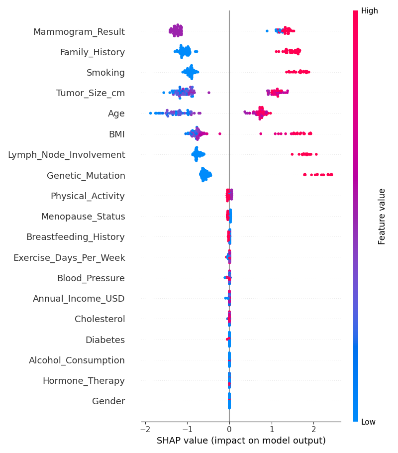
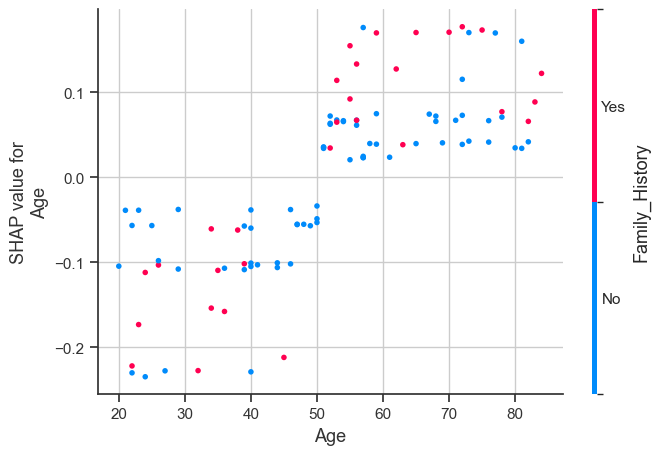
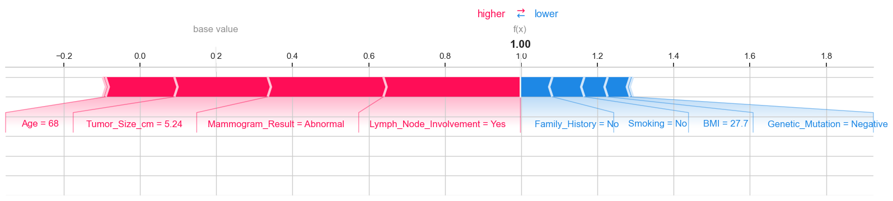
Visualizing the practical impact of the optimized model in a clinical setting.
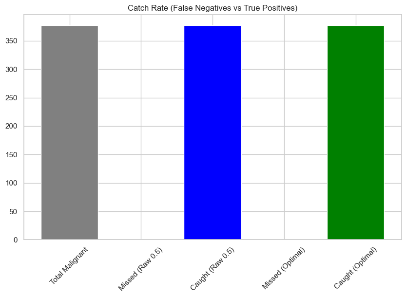
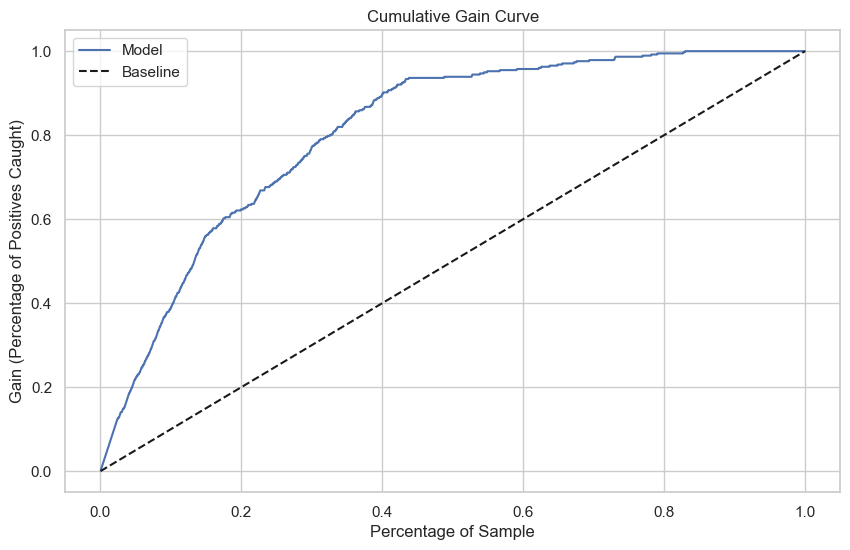